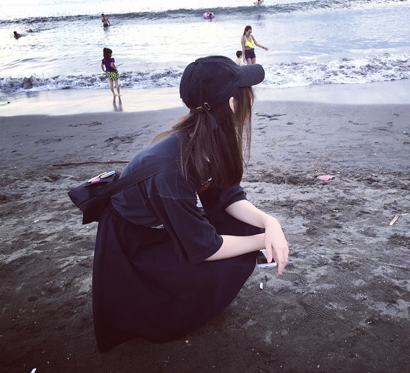

HOME
CONTACT
WORKS

Name : 宮島ひな乃
DOB : 02/18/1998
From : 長野県諏訪市
Live : 埼玉県
Like : 猫,水族館,映画鑑賞
ラジオ聴取,書道
Comment
2020年卒業予定の大学三年生です。
6月からHTMLとCSSを学び始め、今も勉強中です。
人生の目標はトムクルーズに会うことです。
写真を撮ることが好きで特に魚や猫を撮ります。